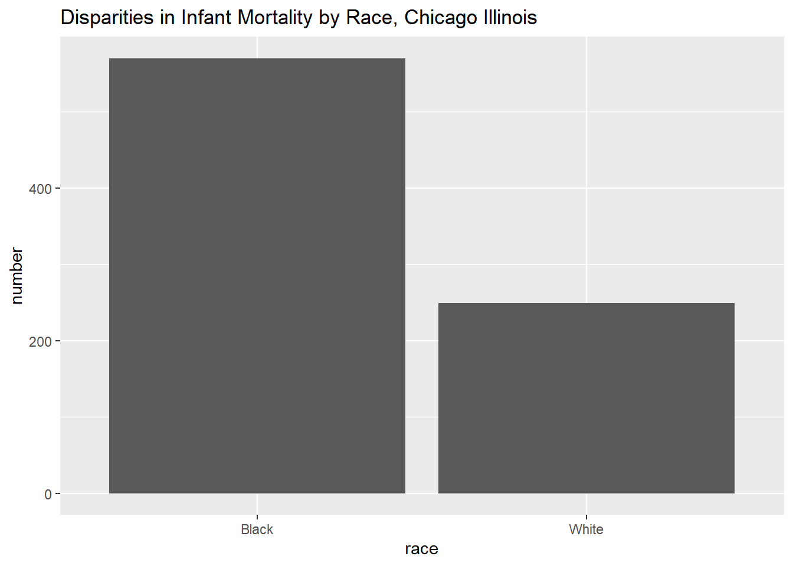

I am connecting to the web portal from the Medical Examiner below. The dataset contains information about deaths that occurred in Cook County that were under the Medical Examiner’s jurisdiction. We will use this to show how to download, select, filter, and summarize data. The example corresponds to our discussion of variables for this week.
The example requires the following packages.
Code
library(RSocrata)library(dplyr)
Attaching package: 'dplyr'
The following objects are masked from 'package:stats':
filter, lag
The following objects are masked from 'package:base':
intersect, setdiff, setequal, union
casenumber incident_date death_date age gender race latino
1 ME2020-05711 2020-05-15 18:00:00 2020-05-15 22:52:00 67 Female White false
2 ME2014-00627 2014-09-21 10:00:00 2014-09-21 13:50:00 25 Male Black false
3 ME2014-00649 2014-09-22 16:40:00 2014-09-22 16:55:00 61 Male Black false
4 ME2014-00712 2014-09-27 16:58:00 2014-09-27 17:10:00 51 Male White false
5 ME2014-00792 2014-10-02 00:00:00 2014-10-02 14:15:00 55 Male Black false
6 ME2014-00869 2014-10-08 10:30:00 2014-10-08 10:35:00 67 Male Black false
manner primarycause
1 PENDING
2 UNDETERMINED DROWNING
3 NATURAL HYPERTENSIVE ARTERIOSCLEROTIC CARDIOVASCULAR DISEASE
4 NATURAL DIABETIC KETOACIDOSIS
5 NATURAL HYPERTENSIVE AND ARTERIOSCLEROTIC CARDIOVASCULAR DISEASE
6 NATURAL HYPERTENSIVE AND ARTERIOSCLEROTIC CARDIOVASCULAR DISEASE
primarycause_linea primarycause_lineb
1
2 DROWNING
3 HYPERTENSIVE ARTERIOSCLEROTIC CARDIOVASCULAR DISEASE
4 DIABETIC KETOACIDOSIS
5 HYPERTENSIVE AND ARTERIOSCLEROTIC CARDIOVASCULAR DISEASE
6 HYPERTENSIVE AND ARTERIOSCLEROTIC CARDIOVASCULAR DISEASE
primarycause_linec secondarycause gunrelated opioids cold_related
1 false
2 false false false
3 false false false
4 false false false
5 false false false
6 OBESITY false false false
heat_related commissioner_district incident_street
1 false NA O'Hare, 10000 W. O'Hare Avenue
2 false 3 499 E. North Water St.
3 false 5 1317 PORTLAND
4 false NA 8759 PELIKIN
5 false NA 7750 South Emerald
6 false 5 11514 south harvard
incident_city incident_zip longitude latitude location
1 CHICAGO 60666 NA NA
2 -87.61546 41.88948 (41.88948019, -87.61546076)
3 60411 -87.62322 41.50733 (41.507334, -87.6232215)
4 60525 NA NA
5 NA NA
6 60628 -87.63151 41.68471 (41.684706, -87.631515)
residence_city residence_zip objectid chi_ward chi_commarea covid_related
1 <NA> 38479 NA
2 60608 1 42 NEAR NORTH SIDE false
3 60411 2 NA false
4 60525 3 NA false
5 <NA> 4 NA false
6 60628 5 21 WEST PULLMAN false
Wrangling
For the sake of example, say that I am interested in infant mortality disparities. I am going download, select, filter and summarize the data in one line of code. Notice that there are over 80,000 records as it is now.
Group by race to get the counts for Black and Whites (query: what would be returned if group_by was NOT used?) Return a simple count n() and store it in a variable called number
# A tibble: 2 × 2
race number
<chr> <int>
1 Black 570
2 White 249
Plot the results using ggplot
Code
read.socrata("https://datacatalog.cookcountyil.gov/api/odata/v4/cjeq-bs86") %>%select(age, gender, race) %>%filter(age <=1& (race =="Black"| race =="White")) %>%group_by(race) %>%summarize(number =n()) %>%ggplot(aes(x = race, y = number)) +geom_bar(stat ="identity") +ggtitle("Disparities in Infant Mortality by Race, Chicago Illinois")

Source Code
---title: "Reading files from the web"author: "Barboza-Salerno"---# Downloading DataI am connecting to the web portal from the [Medical Examiner](https://datacatalog.cookcountyil.gov/Public-Safety/Medical-Examiner-Case-Archive/cjeq-bs86/about_data) below. The dataset contains information about deaths that occurred in Cook County that were under the Medical Examiner’s jurisdiction. We will use this to show how to download, select, filter, and summarize data. The example corresponds to our discussion of variables for this week.The example requires the following packages.```{r}library(RSocrata)library(dplyr)library(ggplot2)options(scipen=10000)``````{r}#https://datacatalog.cookcountyil.gov/api/odata/v4/cjeq-bs86df <-read.socrata("https://datacatalog.cookcountyil.gov/api/odata/v4/cjeq-bs86")head(df)```# WranglingFor the sake of example, say that I am interested in infant mortality disparities. I am going download, select, filter and summarize the data in one line of code. Notice that there are over 80,000 records as it is now.Select three variables, `age`, `gender` and `race````{r}df <-read.socrata("https://datacatalog.cookcountyil.gov/api/odata/v4/cjeq-bs86") %>%select(age, gender, race) ```Filter the data to return ages less than or equal to 1 and only Black or White```{r}df <-read.socrata("https://datacatalog.cookcountyil.gov/api/odata/v4/cjeq-bs86") %>%select(age, gender, race) %>%filter(age <=1& (race =="Black"| race =="White")) ```Group by race to get the counts for Black and Whites (query: what would be returned if group_by was NOT used?)Return a simple count `n()` and store it in a variable called `number````{r}df <-read.socrata("https://datacatalog.cookcountyil.gov/api/odata/v4/cjeq-bs86") %>%select(age, gender, race) %>%filter(age <=1& (race =="Black"| race =="White")) %>%group_by(race) %>%summarize(number =n())df```Plot the results using ggplot```{r}read.socrata("https://datacatalog.cookcountyil.gov/api/odata/v4/cjeq-bs86") %>%select(age, gender, race) %>%filter(age <=1& (race =="Black"| race =="White")) %>%group_by(race) %>%summarize(number =n()) %>%ggplot(aes(x = race, y = number)) +geom_bar(stat ="identity") +ggtitle("Disparities in Infant Mortality by Race, Chicago Illinois")```